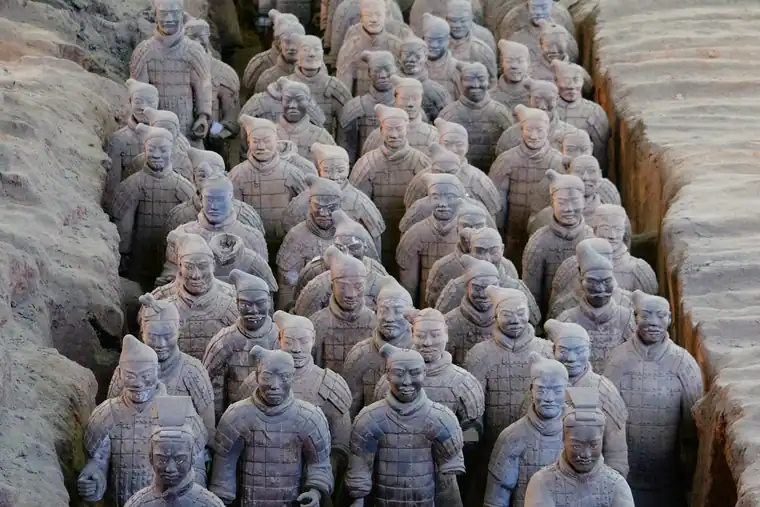
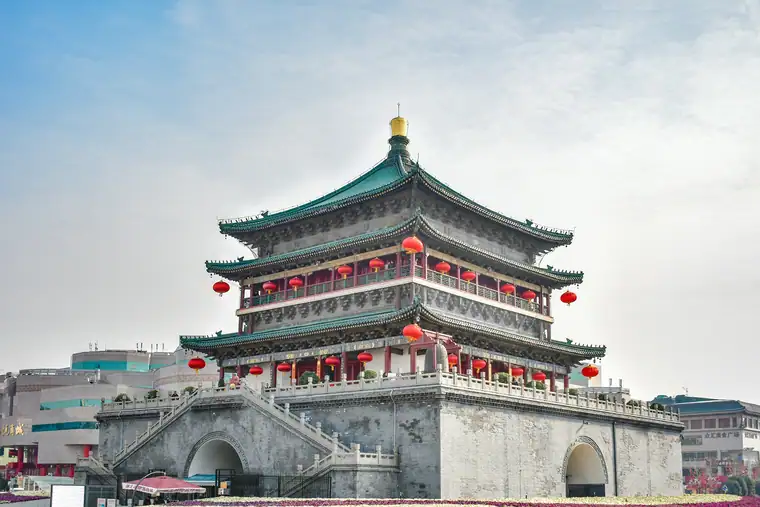

Xi'an Airport Transfer & Private Car
Xianyang (XIY) to downtown and Terracotta Warriors with licensed professional driver. Ancient capital, modern comfort. Fixed price. Reliable Xi'an car service for every trip. Book a private car in Xi'an with just a few clicks. Pick-up and drop-off in Xi'an, door to door.
Xi'an in Pictures
Real scenes from Xi'an — landmarks, streets and everyday life.



Xi'an at a Glance
The ancient capital of 13 dynasties, home to the Terracotta Warriors and the start of the Silk Road. Reliable Xi'an car service for every trip. Book a private car in Xi'an with just a few clicks. Pick-up and drop-off in Xi'an, door to door.
Name Origin of Xian
The name Xi'an refers to the local area and its heritage
Xian Education & Universities
Xi'an is one of China's most important educational centers with over 60 universities. Xi'an Jiaotong University (founded 1896, one of China's top 10) and Northwestern Polytechnical University (China's premier aerospace and aviation school) are the most prestigious. The city produces more engineers and scientists than almost anywhere else in China, earning it the nickname "China's Silicon Valley of the West."
Xi'an Metro & Transportation
Xi'an's metro system has 9 lines covering 300+ km. The airport line connects Xianyang International Airport (XIY) to the North Railway Station in 45 minutes. However, the metro doesn't reach many major tourist sites like the Terracotta Warriors. Our private car service is the most convenient way to visit the Warriors and other suburban attractions. The city is also a major rail hub with high-speed connections to Xi'an (4.5 hours) and Shanghai (6 hours).
Xian Natural Resources & Environment
Xi'an sits in the fertile Guanzhong Plain, surrounded by the Qinling Mountains to the south and the Loess Plateau to the north. The Wei River flows through the city, and the nearby Black River supplies much of the city's water. The Qinling Mountains are a biodiversity hotspot, home to the giant panda and golden monkey. Xi'an experiences a semi-humid continental climate with hot summers and cold winters.
🗺️ Xi'an Maps & Transit
Plan your route before you arrive. Download the official metro maps and city maps below.
Best Time to Visit xian
xian runs from -0.5 °C in January to 26.9 °C in July, an annual average of 13.8 °C and about 672 mm of rain across the year. The chart and the four seasons below are built from the city’s own climate record.
July is the warmest month at 26.9 °C and January the coldest at -0.5 °C, a spread of 27.4 °C. Rain is heaviest in September, which averages 117 mm, and lightest in December at 6 mm. Summer is the wettest stretch of the year at about 286 mm in total, while Winter is the driest at 29 mm.
For most travellers the winter window is the one to plan around: it carries only about 29 mm of rain across the whole season, against roughly 286 mm in summer. The 27.4 °C gap between the extremes also means the shoulder months either side of summer sit in a comfortable band, with many days in the high teens or low twenties.
Private transfers are booked by pickup time rather than by season, so the weather only changes what you do with the hours you have. In January a driver waiting at the terminal matters, because the afternoon average sits around -0.5 °C; by July the same day averages 26.9 °C and the car is most of the day’s comfort.
Spring
March, April, May · avg 14.7 °C · 146 mm rain
March averages 9.0 °C and May 20.0 °C, so the season warms fast.
Summer
June, July, August · avg 25.6 °C · 286 mm rain
July peaks at 26.9 °C, the warmest point of the whole year.
Autumn
September, October, November · avg 13.5 °C · 212 mm rain
September averages 19.9 °C and November 6.9 °C.
Winter
December, January, February · avg 1.3 °C · 29 mm rain
January bottoms out at -0.5 °C, the coldest point of the whole year.
Top Xi'an Attractions
Discover the treasures of China's ancient capital with a private driver.
Terracotta Warriors
UNESCO World Heritage • Qin Dynasty
One of the world's greatest archaeological discoveries — 8,000 life-sized terracotta soldiers guarding the tomb of Emperor Qin Shi Huang. Located 40 km east of the city. Our private car service includes the 1-hour drive with a knowledgeable driver who knows the best viewing times.
🎭 Xi'an City Wall
Ming Dynasty • 14 km Fortification
The most complete city wall in China, built during the Ming Dynasty. 14 km around the old city, 12 meters high and 15 meters wide. You can cycle the entire wall or enjoy the views from the South Gate. Our driver can drop you at any gate and pick you up at another.
🕌 Muslim Quarter & Great Mosque
Tang Dynasty • Islamic Heritage
A vibrant maze of narrow streets behind the Drum Tower, filled with street food vendors, souvenir shops, and the Great Mosque of Xi'an (founded 742 AD, one of China's oldest). The night market is a must-visit for food lovers. Your driver can drop you at the main entrance and arrange a pickup after dinner.
🛕 Giant Wild Goose Pagoda
Tang Dynasty • Buddhist Landmark
Built in 652 AD during the Tang Dynasty to house Buddhist scriptures brought from India by the monk Xuanzang. The surrounding Da Ci'en Temple is a UNESCO World Heritage site. The nearby fountain plaza hosts China's largest musical fountain show.
🏛️ Shaanxi History Museum
National Museum • Ancient Artifacts
One of China's finest museums, housing over 370,000 artifacts spanning from prehistoric times to the Qing Dynasty. The Tang Dynasty gold and silver collection is world-renowned. Admission is free but queues can be long — your driver can help you navigate the ticketing system.
⛰️ Mount Huashan
120 km East • Sacred Mountain
One of China's Five Great Mountains, famous for its sheer cliff faces and perilous hiking trails. A 2-hour drive from Xi'an. For a more comfortable experience, your driver can take you to the cable car entrance and wait while you explore the summit. Return to Xi'an in the evening.
Popular Xi'an Routes
Fixed-price private car service for Xi'an's most popular journeys.
XIY Xianyang Airport → Downtown
From ¥229 (≈ $32.25)~40 km · 50–60 min
Xianyang International Airport (XIY) is located northwest of the city. Our private car picks you up at the arrival hall, tracks your flight for delays, and delivers you directly to your hotel in the city center or near the Bell Tower. No need to navigate the airport bus with luggage.
🗼 Xi'an → Terracotta Warriors
From ¥455 (≈ $64.08)~40 km · 1 hour · 4-hour trip
The most essential Xi'an experience. Your driver picks you up at your hotel, drives you to the Terracotta Warriors site, waits while you explore the three pits and the museum, and returns you to the city. Add the Huaqing Hot Springs for a full day.
⛰️ Xi'an → Mount Huashan Day Trip
From ¥663 (≈ $93.38)~120 km · 2 hours · 8-hour trip
One of China's Five Great Mountains, famous for its sheer cliff faces and thrilling plank walks. Your driver takes you to the cable car entrance, waits while you explore, and returns you to Xi'an. A full day of adventure with door-to-door comfort.
🎭 Xi'an City Tour (Full Day)
From ¥663 (≈ $93.38)8 hours · Business vehicle · Custom itinerary
Visit the City Wall, Shaanxi History Museum, Giant Wild Goose Pagoda, and the Muslim Quarter in one day. Your driver knows the best routes and timing. Add a fluent English guide for deeper historical insights into Xi'an's 3,000-year legacy.
Transparent Pricing in Xi'an
Published rates, no estimate games. Check the numbers yourself before you book — and the price you see is the price your driver is paid from.
Fixed Price List — 西安市 (Xi'an)
Published rates from our 2026 quote sheet. Renminbi first, USD for reference at 1 USD = ¥7.10. Every price below already includes tolls, parking, driver service and free airport waiting time (up to 60 minutes after your flight lands) — nothing is added on the day.
🛬 Xi'an Airport & Intercity Transfer Rates
One flat fare for airport pickup, drop-off or city-to-city — intercity costs the same as the airport run. 35 km and 60 minutes included; beyond that we charge by the minute and the kilometre at the rates shown.
| Vehicle | Seats | Bags | Fixed fare | USD | Beyond 35 km / 60 min |
|---|---|---|---|---|---|
| 4-seat Economy Sedan | 4 | 2 | ¥229 | ≈ $32.25 | ¥1.22/min · ¥5.3/km |
| 4-seat Comfort Sedan | 4 | 2 | ¥328 | ≈ $46.2 | ¥1.34/min · ¥5.87/km |
| 6-seat Business Van | 6 | 3 | ¥418 | ≈ $58.87 | ¥1.43/min · ¥6.24/km |
| 8-11-seat Business Van | 11 | 4 | ¥655 | ≈ $92.25 | ¥1.86/min · ¥8.11/km |
| 12-18-seat Minibus | 18 | 4 | ¥796 | ≈ $112.11 | ¥2.07/min · ¥9.05/km |
| 19-55-seat Coach Bus | 55 | 5 | ¥983 | ≈ $138.45 | ¥2.36/min · ¥10.3/km |
🚗 Hourly Private Charter
Book the car and the hours, keep the car for the day. Unused kilometres can be carried into the next tier, so a long day never turns into a penalty. The driver stays with you — you set the stops.
| Vehicle | 2h / 35km | 4h / 50km | 6h / 75km | 8h / 100km | 10h / 125km |
|---|---|---|---|---|---|
| 4-seat Private Car | ¥273 | ¥455 | ¥546 | ¥663 | ¥819 |
| 6-seat Business Van | ¥351 | ¥598 | ¥715 | ¥858 | ¥1066 |
| 8-11-seat Business Van | ¥505 | ¥861 | ¥1030 | ¥1236 | ¥1535 |
| 12-18-seat Minibus | ¥607 | ¥1033 | ¥1236 | ¥1483 | ¥1842 |
| 19-55-seat Coach Bus | ¥728 | ¥1240 | ¥1483 | ¥1779 | ¥2210 |
Why travellers book Xi'an with Chinawheely
Six things you get with every booking — in Xi'an and across all 333 cities on the platform.
Licensed travel agency, not a ride-hail app
Chinawheely is a registered travel agency (L-HUB-101603). Your booking is a travel contract with a licensed operator — not a broker handing your number to whoever answers the phone.
One locked price, shown before you pay
The price you see is the price you pay. Tolls, parking, driver service and airport waiting time are already inside it. No surge pricing, no meter, no cash-on-the-day surprise.
Flight tracked, waiting time on us
We watch your flight number in real time. If it lands late or is delayed, your driver shifts with it and the waiting time stays on us — not on your bill.
A licensed driver who knows the city
Every car is driven by a professional local driver who knows the routes, the shortcuts and the parking that actually works near the attractions — with English communication and a name board on arrival.
Free changes up to 48 hours before
Plans move. Reschedule or cancel any booking free of charge up to 48 hours before your scheduled pickup, straight from your confirmation link.
A real human on WhatsApp, 8AM–12AM Beijing time
One message reaches a person who can re-price, re-route or re-plan your trip on the spot. No ticket queue, no chatbot loop.
Book Xi'an at the published price
Pick your vehicle, see the fare line by line, and pay by PayPal or Alipay. Free changes up to 48 hours before pickup — or ask on WhatsApp and we will hold a car for you.
The quote is valid for 48 hours, and you can change or cancel free up to 48 hours before pickup.
Getting to Xi'an: Airports & Railway Stations
Getting to Xi'an by air, rail, or road
✈️ Xian Airports
⛰️ Xi'an Xianyang International Airport (XIY)
Northwest of the city · 40 km to Bell Tower
XIY is Xi'an's main airport and one of northwest China's busiest gateways. It has three terminals: Terminal 1 (regional flights), Terminal 2 (domestic flights), and Terminal 3 (most international and major domestic flights). The airport metro line connects to the North Railway Station in 45 minutes, but with luggage after a long flight, a private car is the most comfortable option. By road, expect 50–60 minutes to downtown hotels near the Bell Tower.
⛰️ Xi'an Xianyang Airport (New Terminal 5 — Planned)
Expanding capacity · Same location
Xi'an is rapidly expanding its airport capacity to serve growing international traffic. The existing terminals handle flights to Seoul, Tokyo, Bangkok, and major European cities. Our drivers monitor terminal assignments and will meet you at the correct arrival hall.
🚄 Xian Railway Stations
🗼 Xi'an North Station
High-speed hub · 30 min to Bell Tower
The main station for high-speed trains to Xi'an (4.5 hours), Shanghai (6 hours), Zhengzhou, and Luoyang. The station is modern and massive — a pre-booked pickup with a clear meeting point saves significant time.
🗼 Xi'an Station
Historic central station · 10 min to Bell Tower
Located near the city wall, this is Xi'an's traditional main station. It serves conventional trains to western and northern China, including routes to Lanzhou, Urumqi, and Tibet. Its central location makes hotel transfers quick.
🗼 Xi'an South Station
Regional trains · Southern suburbs
Mainly serves regional trains to nearby cities and mountainous areas in southern Shaanxi. Less frequently used by tourists but useful for trips to the Qinling Mountains.
🗼 Xi'an East Station (Freight)
Freight hub · East of the city
Primarily a freight station, though some regional passenger services operate here. Not commonly used by tourists.
⛰️ Huashan North Station
For Mount Huashan · 120 km east
If you're taking the high-speed train to Mount Huashan, this is your station. From there, our driver can pick you up and take you to the mountain entrance, or you can book a direct private car from Xi'an.
🗼 Need a Station Pickup?
We meet you at the exit with a name board and help with luggage.
Book Station TransferIntangible Cultural Heritage & Living Crafts of Xi'an
Meet the traditional arts that have defined Xi'an for centuries — and the artisans keeping them alive.
🎭 Qinqiang Opera
UNESCO-listed intangible heritage. The oldest and most influential of China's "Four Great Characteristic Melodies," Qinqiang is known for its bold, loud singing style and dramatic face-changing techniques. It originated in Shaanxi over 2,000 years ago.
Where to experience it: Yi Su She Theatre or the Shaanxi Grand Theatre. Ask your driver to book tickets.
🛕 🪕 Shaanxi Folk Music (Laosheng)
Traditional Shaanxi folk songs are characterized by their high-pitched, resonant vocals that echo across the Loess Plateau. The "Xintianyou" style is a call-and-response form that has been sung by farmers for centuries.
Where to experience it: Folk music performances at the Shaanxi Folk Art Museum or during the Spring Festival temple fair.
🖌️ Shaanxi Shadow Puppetry (Piying)
A traditional art form where leather puppets are manipulated behind a translucent screen, accompanied by music and storytelling. Shaanxi shadow puppets are carved from donkey leather and painted with vivid colors.
Where to find it: Shadow puppet workshops on the Muslim Quarter, or watch a performance at the Shaanxi Folk Art Museum.
🏺 Yaozhou Celadon
One of China's oldest and most celebrated ceramic traditions, originating near Xi'an during the Tang Dynasty. Yaozhou celadon is known for its jade-green glaze and intricate carved or incised patterns of flowers, fish, and clouds.
Where to find it: Yaozhou Kiln Museum (near Tongchuan, 1.5 hours from Xi'an) or reputable ceramic shops in the city center.
🧵 Shaanxi Embroidery (Xiu)
Traditional Shaanxi embroidery features bold colors and folk motifs including tigers, fish, and flowers. The style is more rustic and expressive than the refined Suzhou embroidery, reflecting the region's frontier heritage.
Where to find it: Folk art shops on Shu Yuan Men and the Shaanxi Folk Art Museum.
🎨 Tang Dynasty Music & Dance
Revived performances of Tang Dynasty court music and dance, featuring ancient instruments like the pipa, guzheng, and bamboo flute. The elegant choreography and flowing silk costumes transport audiences back to Chang'an's golden age.
Where to experience it: Tang Dynasty Palace Theatre near the Giant Wild Goose Pagoda offers nightly performances.
Xi'an Local Secrets
Insider tips to help you experience Xi'an like a local.
Visit the Warriors at 8:30 AM Sharp
The Terracotta Warriors open at 8:30 AM. Arrive at the gate 15 minutes early to be first in line. The first hour is blissfully quiet — by 10 AM, tour buses arrive en masse. Your driver can get you there right on time.
Eat Roujiamo from the Source
The best roujiamo is found in the Muslim Quarter's back alleys, not the main tourist street. Look for a stall with a queue of locals. The "Zhouzhi" style with extra spices is the local favorite.
Cycle the City Wall at Dusk
Rent a bike on the South Gate and cycle the full 14 km of the wall. The views at sunset are unbeatable, and the temperature is cooler. The rental shops close at 8 PM in summer, 6 PM in winter.
Seasonal Highlights
Spring: Cherry blossoms at Qinglong Temple. Summer: Cool evenings on the city wall. Autumn: Golden ginkgo on Yanta Road. Winter: Hot lamb soup in the Muslim Quarter.
Book the Shaanxi History Museum Online
Free tickets are limited and queues are long. Book online at least a week ahead. The museum is closed on Mondays. A Tuesday or Wednesday morning visit is usually the quietest.
Use a Private Car for Huashan
Public buses to Mount Huashan take 2+ hours and are crowded. A private car gets you there in under 2 hours, and your driver can wait while you hike, then take you to a local restaurant for a well-earned meal.
Day Trips from Xi'an
Real destinations around Xi'an, reached comfortably with a private car and a licensed professional driver.
Best season to travel in Xi'an
🌸 Best Season March – May / September – November — Spring (March–May) brings comfortable temperatures and city wall peach trees in bloom. Autumn (September–November) offers crisp air, clear skies, and the best conditions for photographing the Terracotta Army.
The best all-round season. Comfortable temperatures for cycling the full 14km city wall circuit. Terracotta Army less crowded in April.
Hot and often hazy. Early morning visits to the Terracotta Army are essential. The Big Wild Goose Pagoda is beautiful at sunset.
One of the best seasons. Clear skies, cool evenings, and beautiful autumn light for photography. Best time for day trips to Mount Huashan.
Cold but with fewer tourists. The Terracotta Army is peaceful in winter. Snow on the city wall is a rare and beautiful sight.
🧧 Chinese New Year 2027 in Xi'an
Chinese New Year 2027 falls on January 29, 2027 -- the start of the Year of the Snake on the Chinese lunar calendar. Xian's Chinese Spring Festival 2027 is one of China's most historically rich celebrations -- ancient city walls draped in lanterns, Tang dynasty performances, and traditional Shaanxi opera. Keywords: when is chinese new year 2027, chinese new year 2027, chinese spring festival facts.
Chinese Spring Festival Facts
When is Chinese New Year 2027? January 29, 2027
Chinese New Year 2027 is January 29, 2027. Xi'an, as the ancient capital of 13 dynasties, has some of China's most historically rich Spring Festival traditions. The city wall is illuminated for the occasion.
City Wall Lantern Festival -- 14km of Red Lanterns
Xian's famous city wall (城墙) is draped in thousands of red lanterns during Spring Festival -- one of the most spectacular urban sights in China. The entire 14km circuit is illuminated.
Tang Dynasty Palace Spring Festival Performance
The Tang Dynasty Palace (大唐芙蓉园) presents special Spring Festival performances -- featuring Tang dynasty warrior dance, traditional court music, and illuminated garden displays.
Chinese Spring Festival Food -- Shaanxi Style
Xian's Spring Festival food features biangbiang面 (油泼面), roujamo (肉夹馍), and yangrou paomo (羊肉泡馍). These hearty noodle and bread dishes are warming for cold January nights.
Top Spring Festival Activities
Xi'an City Wall Lantern Festival
The 14km ancient city wall draped in thousands of red lanterns -- one of China's most dramatic urban sights. Rent a bicycle and ride the wall after dark. Admission: 54 yuan for wall entry.
Tang Dynasty Palace Spring Festival (大唐芙蓉园)
The Tang Dynasty Paradise theme park presents the Tang Dynasty Palace Spring Festival Gala -- 500 performers in Tang costumes, illuminated fountains, and pyrotechnics. Xian's answer to the Xi'an CCTV Gala.
Shaanxi Qin Opera at the Old City (秦腔)
The Shaanxi Traditional Opera Theatre performs Qin opera (秦腔) -- one of China's oldest and most powerful vocal styles (UNESCO heritage). Dramatic belting and percussion throughout the holiday.
Great Mosque Spring Festival Atmosphere (大清真寺)
The historic Muslim Quarter (回民街) is beautifully decorated for Spring Festival -- lamb skewers and roujamo street food continue throughout the holiday. The uniquely Xi'an atmosphere.
Must-Try Spring Festival Food
Roujamo (肉夹馍) -- Chinese Hamburger
Braised pork in a crispy flatbread -- Xian's signature street food. During Spring Festival, the fat belly version (腊汁肉夹馍) with extra rich braised pork belly is the holiday treat.
Tip: Best at: Defachang (德发长) or Lao Sun Jia (老孙家) in the Muslim Quarter
Yangrou Paomo (羊肉泡馍)
Mutton stew with flattened bread -- Xian's most famous dish. During Spring Festival, families traditionally eat paomo at the reunion dinner. Tear the flatbread into the rich mutton broth yourself.
Tip: Best at: Tong Sheng Xiang (同盛祥) or Lao Ma Jia (老马家) in the Muslim Quarter
Xi'an Jiaozi (饺子)
Xian's jiaozi use a wider wrapper than Xi'an style. Filled with pork, Chinese cabbage, and Sichuan pepper. Served with dipping sauce of vinegar, chili oil, and garlic.
Tip: Hanguan Pass and South Gate area stalls during holiday
Huang
Traditional Xi'an New Year cake -- made from glutinous rice flour and osmanthus flowers, steamed and sliced. The fragrant osmanthus flavour symbolises a sweet new year.
Tip: Available at the Muslim Quarter markets throughout January
Traditional Customs
City Wall Lantern Walks (登城墙)
Xi'an families traditionally walk the city wall on the first morning of the new year -- to receive the new year's luck. The entire family walks the wall together, enjoying the lantern displays.
Qin Opera Opening Gong (开锣)
The opening of a Qin opera (秦腔) performance begins with a dramatic percussion -- the opening gong (开锣) symbolising the start of the new year. The entire neighbourhood can hear the opening drum.
Red Packets in Xi'an Dialect
In Xi'an dialect, red packets are called ya sui qian (压岁钱/money to suppress evil). Amounts typically 100-1,000 yuan. Xian's unique greeting in dialect: nian guo de hao (年过的好).
Terracotta Warriors Special Spring Festival Opening
The Terracotta Warriors (兵马俑) museum typically has special Spring Festival opening hours and may have discounted tickets during the holiday period. Combine with city wall visit for a full historical day.
💎 Xi'an & Lantian Jade
Xi'an is the gateway to Lantian jade -- one of China's five famous jades, mined from the Qinling Mountains just south of the city. The Xi'an Textile City market is the best place in the region to buy jade, turquoise, and agate.
Lantian Jade (蓝田玉)
One of China's five famous jades, sourced from Lantian County 45km south of Xi'an. Known for sky-blue and white tones. Available at the Xi'an Textile City (轻工市场) from ¥50 for small pieces.
Turquoise (绿松石)
Hubei turquoise -- the finest in China -- reaches Xi'an jade markets through the trade routes. The vivid sky-blue colour is unmistakable. Look for NGTC certification on purchases over ¥500.
Xi'an Textile City (轻工市场)
Multi-floor jade and antique market in Weiyang District. Metro Line 1 to Chanba People's Centre. Bargaining starts at 30% of asking price. Best visited mornings. NGTC certification on-site.
🏆 Major Sports Events in Xi'an
Xi'an is a major sports destination in northwest China -- home to Shaanxi Chang'an FC in the CSL, the Shaanxi Warriors NBL champions, and the world's most unique running event: the City Wall Half Marathon.
Xi'an Marathon (西安马拉松)
2026: April (annual)
One of China's most popular marathons -- the Xi'an Marathon (西安马拉松) course passes the City Wall (城墙), Bell Tower (钟楼), Giant Wild Goose Pagoda, and Tang dynasty city walls. 35,000 runners. Registration opens January.
Venue: Start: Yongning Gate (永宁门); Finish: Qujiang. Metro: Yongning Gate (Line 2).
Chinese Super League Football (中超联赛 – 陕西长安联合)
2026 season: March to November
Shaanxi Chang'an (陕西长安联合) competes in the CSL at the Xi'an Olympic Sports Centre (西安奥体中心) -- a 60,000-capacity stadium built for the 2021 National Games. Excellent supporter atmosphere.
Venue: Xi'an Olympic Sports Centre (西安奥体中心), Baqiao District. Metro: Olympic Sports Centre (Line 3/14).
Shaanxi Warriors NBL Basketball (陕西信达)
2026 season: May to October
The Shaanxi Warriors (陕西信达) are one of China's most successful NBL (National Basketball League -- second tier) teams -- 3x NBL champions (2015, 2017, 2021). Play at the Xi'an Sports Centre.
Venue: Xi'an Sports Centre (西安体育中心), Yanta District. Metro: Olympic Sports Centre (Line 3/14).
City Wall Half Marathon (城墙半程马拉松)
2026: October (annual, since 2005)
One of the world's most unique running events -- running on the 14km ancient City Wall (城墙) of Xi'an. Limited to 5,000 runners. Registration is highly competitive. A bucket-list running experience.
Venue: City Wall (城墙), start/finish at Nanmen (南门). Metro: Nanmen (Line 2).
Visa & Entry Information for Xi'an
Plan your China trip with confidence -- everything you need to know about visas, border crossings, and getting to Xi'an.
China Visa Guide
Complete guide to tourist visas, business visas, application process, and 144-hour transit visa-free access at major Chinese cities.
Embassies & Consulates
Find Chinese embassies and consulates worldwide -- including USA, UK, Canada, Australia, Germany, France, Japan, South Korea and more.
Entry & Travel Guide
From airport immigration to paying with your phone -- everything you need to know before and after arriving in China.
🎭 Concerts & Performances in Xi'an
Xi'an has a vibrant year-round performing arts scene from world-class symphony orchestras and international pop concerts to traditional cultural shows and annual arts festivals. Here is your guide to the best live performances in Xi'an.
🎭 Traditional Cultural Performances
Giant Wild Goose Pagoda Tang Dynasty Night Performance
Xi'an's most spectacular nightly cultural performance. Large-scale fountain show with classical Chinese music, Tang Dynasty dance, light effects. Free nightly at Giant Wild Goose Pagoda North Square.
Venue: North Square of Giant Wild Goose Pagoda
Season: Year-round (outdoor Apr-Oct, indoor Nov-Mar)
Tang Dynasty Music and Dance Performance - The Song of Everlasting Sorrow (长恨歌)
Definitive Tang Dynasty music and dance performance. Staged at historic Hua Qing Palace where Emperor Xuanzong and Yang Guifei love story unfolded. Spectacular outdoor production: mountain backdrop, fireworks, hundreds of performers.
Venue: Hua Qing Palace (Hua Qing Chi)
Season: Seasonal (Apr-Oct outdoor evening)
Shaanxi Opera House Traditional Qin Opera Season
Finest venue for Qin Opera (Qinqiang), one of China oldest opera styles and UNESCO intangible cultural heritage. Also hosts Shaanxi Provincial Song and Dance Troupe, Tang Dynasty palace music.
Venue: Shaanxi Opera House / Tang Dynasty Art Theatre
Season: Year-round
🎸 Pop & Rock Concerts
Xi'an Olympic Sports Centre Stadium Major Concerts
Xi'an's newest 60,000-seat stadium opened for 2021 National Games. Now hosts major Chinese pop concerts. Xi'an is a historically important stop on concert tours due to rich cultural heritage.
Venue: Xi'an Olympic Sports Centre Stadium
Season: Year-round
🎵 Music & Arts Festivals
Xi'an's premier rock and indie music festival. Leading Chinese rock bands, indie artists, underground acts. Set in historic Qujiang district. Celebrates Xi'an reputation as China rock capital.
Venue: Qujiang Creative Park / Chang an University Area
Season: May annually
Attend a Xi'an Concert with a Private Car
Avoid metro crowds after the show. Our licensed professional driver will drop you at the door and pick you up after. Available for all venues in Xi'an.
Book Concert Transfer⚽ Major Sports Events in Xi'an
Xi'an hosts an impressive calendar of major sports events throughout the year. From professional football and basketball to international marathons and winter sports, here is your complete guide to sports in Xi'an for 2026 and 2027.
⚽ Football & Soccer
Chinese Super League (CSL) - Shaanxi Sino-Pol FC Home Matches
Season: March-November 2026 Year: 2026
Shaanxi Sino-Pol (formerly Guoli) plays at brand new 60,000-seat Xi'an Olympic Sports Centre Stadium built for 2021 National Games. Xi'an has one of China most passionate football fan bases. 2026 season: March-November.
Venue: Xi'an Olympic Sports Centre Stadium
🏃 Marathons & Running
Xi'an International Marathon
Season: April annually (2026 TBC) Year: 2026
One of China most historically atmospheric marathons passing through ancient city walls, past Bell Tower, ending at Giant Wild Goose Pagoda. Makes unique run through 1,000 years of Chinese history. 2026 expected in April.
Venue: Ancient City Wall to Giant Wild Goose Pagoda
🏀 Basketball
CBA - Shaanxi Xi'an Liancheng / Northwestern Polytechnical University Home Games
Season: October 2026 - May 2027 Year: 2026-2027
Shaanxi CBA team competes at Xi'an Olympic Sports Centre Basketball Arena. 2026-2027 season: October through May.
Venue: Xi'an Olympic Sports Centre Basketball Arena
🏀 Multi-Sport Events
Shaanxi Provincial Games
Season: August-September annually Year: 2026
Major multi-sport event in Xi'an featuring athletics, swimming, team sports, martial arts from teams across Shaanxi province. Held at Olympic-level venues.
Venue: Xi'an Olympic Sports Centre and provincial venues
🥋 Martial Arts
Shaolin International Wushu Tournament - Xi'an Events
Season: May-June annually Year: 2026
Major Wushu (martial arts) events as part of international Wushu circuit. Features traditional Wushu forms, Sanda (combat), and team performances at highest international level.
Venue: Qujiang Convention Centre / Xi'an Sports Centre
Get to Xi'an Sports Events with a Private Car
Avoid metro crowds on match day. Our licensed professional driver takes you door to venue and back. Available for all stadiums, arenas, and courses in Xi'an.
Book Sports TransferTea Culture & Teahouse Guide in Xi'an
Xi'an sits inside China's dark-tea belt, and the tea culture of this ancient capital is the older, slower one: leaves left to ferment for months or years, and a bowl rather than a pot.
Dark tea is one of the six families of Chinese tea, and it is made by leaving picked leaves to ferment for several months or even several years, so that the mould in the leaf does its work and the brew comes out black-brown and cloudy, which is where the name comes from. The main producing regions are Shaanxi, Anhui, Hubei, Hunan, Sichuan, Yunnan and Guangxi, and Shaanxi is one of them.
That means the Xi'an version of the habit is not delicate leaf tea at all. It is compressed and aged, drunk strong, and the trade behind it goes back a long way: the tea road network that ran from Chengdu, Ya'an, Kunming and Pu'er through the Hengduan mountains to Lhasa and on into South-East Asia had already formed by the Western Han and was still being used into the 1950s. That network was listed as a national key cultural relic site on 5 March 2013.
The teahouse frame around that trade is the familiar one. The first tea houses appeared between 713 and 741 AD in the Tang dynasty, the Song period turned them into teahouses proper with two-storey shopfronts in Ezhou, and a Hui Muslim eight-treasure blend made from green tea and a dozen fruits and flowers remains the everyday drink in the north.
Dark tea is produced across Shaanxi, Anhui, Hubei, Hunan, Sichuan, Yunnan and Guangxi.
The tea road network was placed on the seventh national list of key cultural relic sites.
When the first Chinese teahouses appeared, in the Tang dynasty, and were called mingpu.
Have the driver take the north gate rather than the south one if the teahouse is on the old city wall, since the wall road is pedestrian-only at the busiest hours.
More Xi'an Guides & Transfers
Airport transfers, day trips and practical guides for Xi'an — pick the one that matches your itinerary, then book the car in a minute.
Xi'an Airport Transfer to Ancient City Wall
Book Xi'an Airport Transfer To Ancient City Wall private car service with licensed driver
Airport TransferXi'an Airport Transfer to Terracotta Warriors
Book Xi'an Airport Transfer To Terracotta Warriors private car service with licensed driver
Best Time to VisitBest Time to Visit Xi'an Xi'an
Book Xi'an Best Time private car service with licensed driver
Day TripsDay Trips from Xi'an Xi'an
Book Xi'an Day Trips private car service with licensed driver
Food & ShoppingFood & Shopping Guide 🍽 Xi'an
Book Xi'an Food Shopping private car service with licensed driver
Photo SpotsBest Photo Spots Xi'an
Book Xi'an Photo Spots private car service with licensed driver
Tea CultureXi'an Tea Culture & Tea House Guide
Book Xi'an Tea Culture private car service with licensed driver
More China destinations
Compare routes, published prices and local driver tips across the cities we cover.
Other cities in Shaanxi
Popular destinations